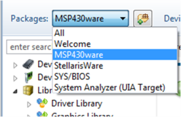

MSP USB Descriptor Tool 5_00_11_22
Release Notes
Document Revision: 032417.1339
This document is divided into the following sections:
What's New
5_00_11_22
- Disabled 'XT2 Oscillator Frequency' drop down menu in the MSP tab, due to the new XT2 Freq. auto detection feature in the USB stack.
IMPORTANT: Prior to running this version of the descriptor tool, delete the following folder C:/Users/<user>/Texas_Instruments if it exists
- Updated 'Custom HID' XML generation to include custom descriptor values when the HID interface is saved.
- Fixed JIRA bugs:
- MSPUSB-301 : Custom HID interfaces are not stored in xml file
- MSPUSB-306 : Update Descriptor Tool to remove XT related variables from descriptor.h
Revision_History
5.00.10.19
- Updated 'Max Power Drain from Host' drop down menu to include currents from 500mA to 0mA
IMPORTANT: Prior to running this version of the descriptor tool, delete the following folder C:/Users/<user>/Texas_Instruments if it exists
5.00.00.19
- User interface updated.
- Removed RCP framework.
- Updated tool to save USB interfaces configuration using *.xml file instead of *.dat files
IMPORTANT: Old *.dat files cannot be loaded to this version of the tool.
As part of MSPWare installation
Generally MSP USB Descriptor Tool is installed as part of MSPWare.
After installing MSPWare restart Code Composer Studio. To launch the MSP USB Descriptor Tool:
- Open TI Resource Explorer (View-->TI Resource Explorer). Under packages select "MSPWare".

- Expand Development Tools and select MSP USB Descriptor Tool.
- Finally, click on "Launch MSP USB Descriptor Tool".
MSP USB Descriptor Toolstandalone installation
- Download MSP USB Descriptor Tool installer.
- Run the installer DescriptorTool-5_00_11_22-setup.exe for windows or DescriptorTool-5_00_11_22-Linux-x86-Install for Linux
- Follow installer instructions
- To
launch tool. Go to Start Menu --> All Programs --> Texas
Instruments --> MSP USB Descriptor Tool -->
MSP USB Descriptor Tool_5_00_11_22
Device Support
The following families of devices are supported in this release of MSP USB Descriptor Tool :
-
MSP USB Descriptor Tool:
-
Supported Operating System:
- Windows 7 or later.
- Linux
- Mac OSx 10.6 or later
-
Java 1.6 or later. Click here to go to Java Download Page.
This release is an GA version.
This is build 5_00_11_22 of MSP USB Descriptor Tool.
Additional Resources
For more information, visit www.ti.com.